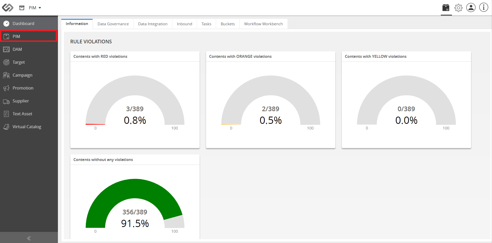
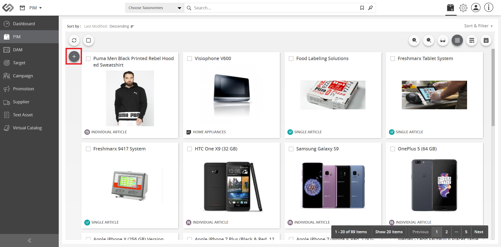
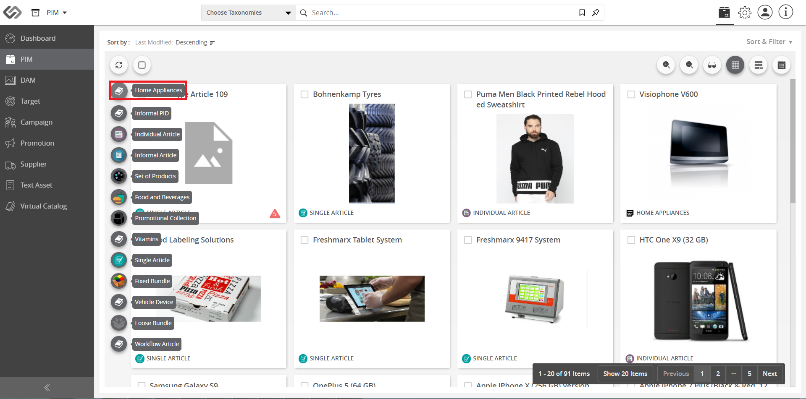
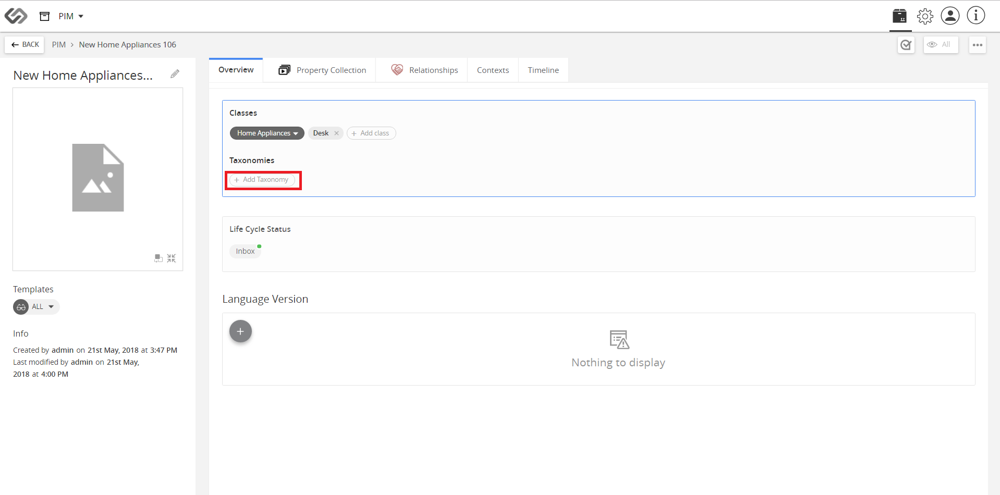
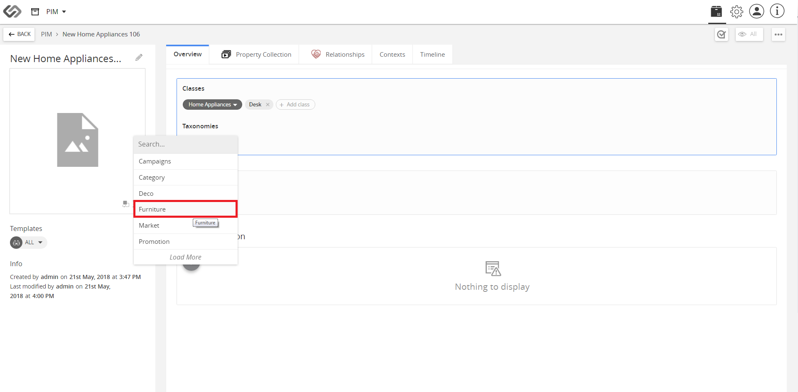
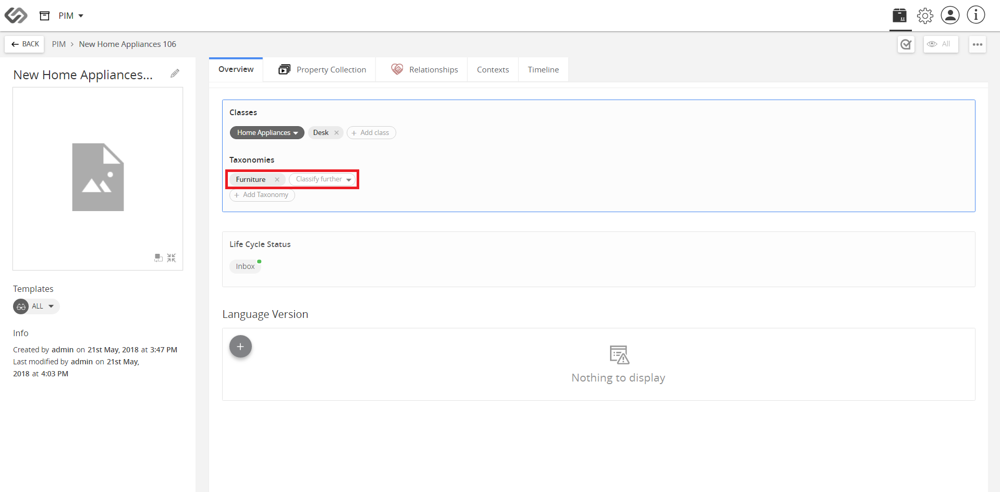

Linking Objects
Linking Objects allows an administrator to link an object to multiple taxonomies.
| Key Term: |
- Taxonomy: a taxonomy is a scheme of classification used for an organization’s products.
|
| Description: |
- The feature allows the classification of objects to various sub-taxonomies for smooth navigation and easy searching of other linked objects.
- It can apply multiple taxonomies to a product to show the categories the product falls under.
|
| Related topics: |
|
| Application: |
- Link an object to a taxonomy for proper classification.
- Taxonomy branches serve as classification of the parts.
|
How-to: Linking Objects
Classify with ease by linking objects, and here’s how to do it.
- Go to PIM and hover on the “+” icon.



- On the Overview tab, click Add Taxonomy.


- Property collection is added via Taxonomy. You can link more products if necessary.
